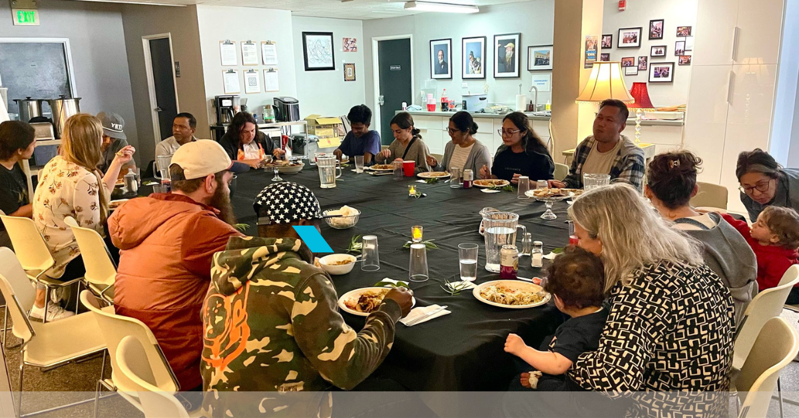

Join the Five-Month DTS Adventure at YWAM San Francisco!
Are you feeling a pull towards a deeper connection with God and your community? At the Discipleship Training School at YWAM San Francisco, you have the opportunity to embark on a five-month adventure that could be life-changing. This program invites Christian youth to explore their faith through urban ministry and community service in one of the most dynamic neighborhoods. Together, we will engage in prayer, worship, and service, embracing the call to be the hands and feet of Jesus. With a focus on personal growth and spiritual depth, this experience offers a unique chance to learn, serve, and grow alongside a passionate community.
Discover Your Calling
The Discipleship Training School at YWAM San Francisco offers a unique opportunity for spiritual growth and self-discovery. This program is designed to help you uncover your true calling and deepen your faith.
Five-Month Journey Awaits
The Discipleship Training School is a transformative five-month experience that challenges and inspires you. This journey is carefully structured to promote personal and spiritual development. During your time at YWAM San Francisco, you'll engage in daily worship, Bible study, and community service. These activities are designed to strengthen your faith and help you grow closer to God.
You'll also have the chance to explore the vibrant city of San Francisco, with its diverse cultures and unique challenges. This urban setting provides a rich backdrop for your spiritual journey.
Hands and Feet of Jesus
At YWAM San Francisco, we believe in putting faith into action. Our program emphasizes the importance of being the hands and feet of Jesus in our community. You'll have numerous opportunities to serve those in need, from working in homeless shelters to participating in community outreach programs. These experiences will help you develop compassion and empathy.
Through these service activities, you'll learn valuable skills in leadership, teamwork, and problem-solving. You'll also gain a deeper understanding of social issues and how to address them from a faith-based perspective.
Growth Through Urban Ministry
Urban ministry is a key component of the Discipleship Training School at YWAM San Francisco. This unique aspect of our program allows you to apply your faith in a dynamic, fast-paced environment. You'll learn how to navigate the challenges of city life while maintaining a strong spiritual focus. Our experienced mentors will guide you in developing strategies for effective urban outreach.
The skills you gain through urban ministry will be invaluable, whether you choose to continue in city-based mission work or apply them in other settings. This experience will broaden your perspective and deepen your understanding of God's work in diverse communities.
Upcoming School Info
Next DTS Starts: January 26, 2026
Location: YWAM San Francisco, California
Apply Now: click here